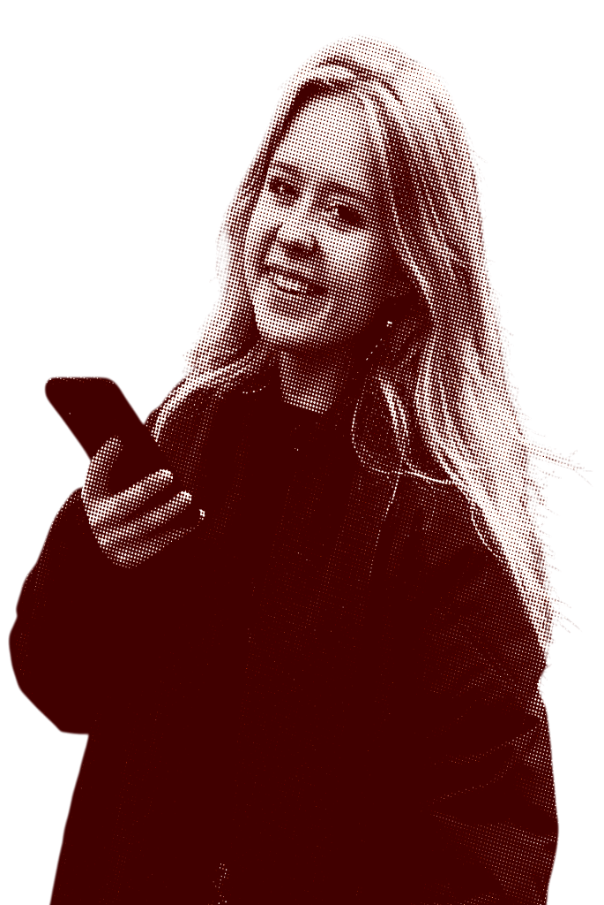
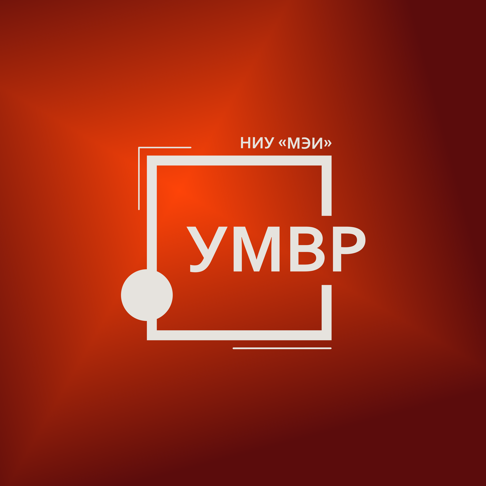
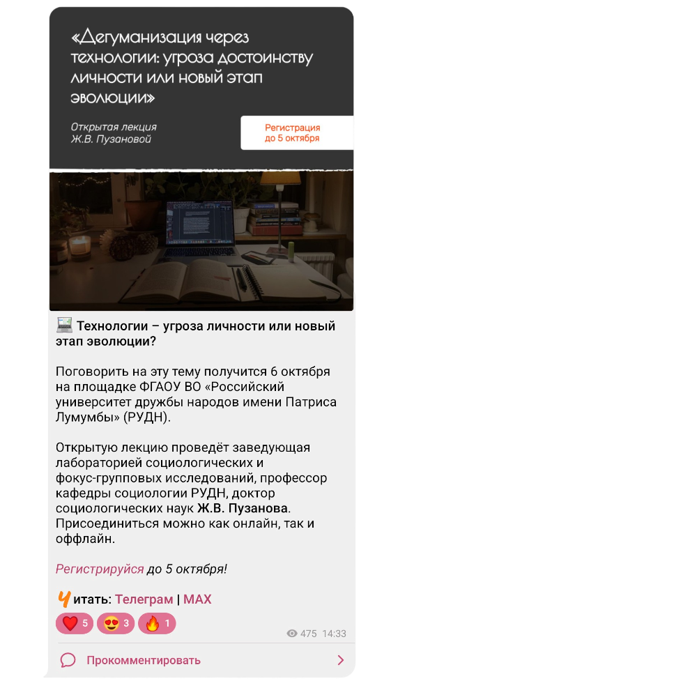
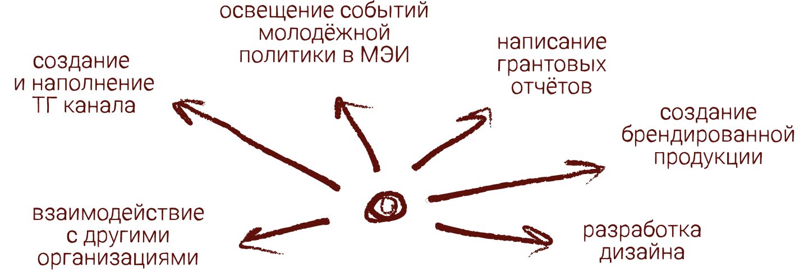
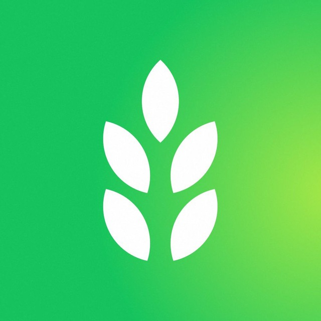
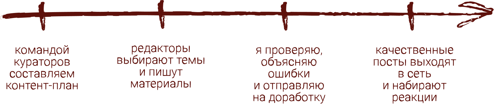
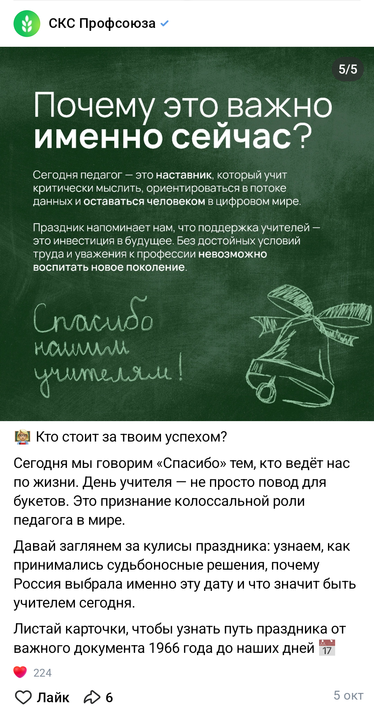
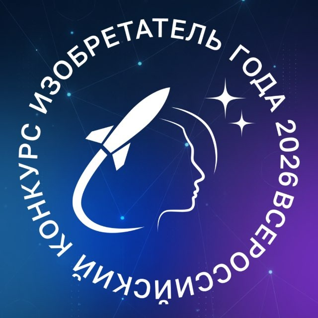
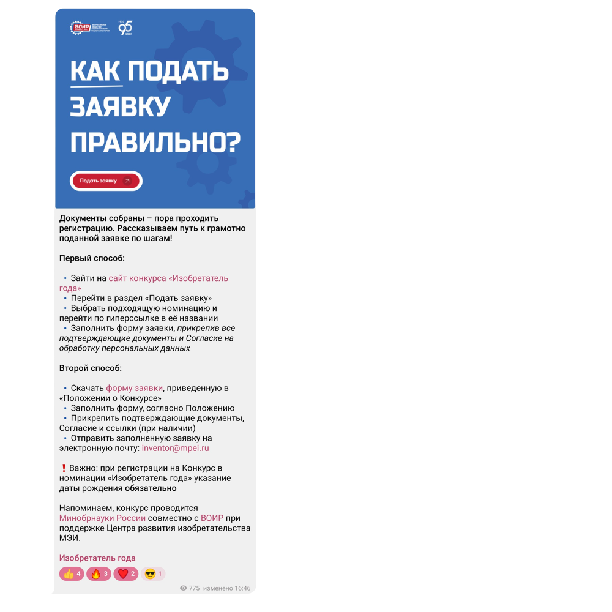

Костенецкая Ксения
Редактор

Чем я могу быть полезна
Работаю с любыми форматами: статьи, сценарии, посты, репортажи, новости, художественные тексты
Знаю, как применять и адаптировать принципы сторителлинга. Имею опыт фактчекинга и корректуры
Владею программами Figma, Adobe Illustrator, Adobe Photoshop, Procreate. Создаю иллюстрации и макеты для типографии
Мои проекты


Развитие медиаресурса
- Вырастила канал с 0 до 1000+ подписчиков
- Провела ребрендинг
- Написала и выпустила около 400 постов (ER 66,6%)


Курирование команды редакторов
- Руковожу командой из 20 человек
- Проверяю и согласовываю все выходящие посты
- Провожу обучения, читаю лекцию по работе с текстом, сторителлингу и позиционированию




Освещение проекта
- Вырастила телеграм-канал с 0 до 300+ подписчиков
- Написала и выпустила около 100 постов
- Осуществила освещение очной церемонии
- Провела 10+ интервью
- Взаимодействовала с региональными и федеральными СМИ